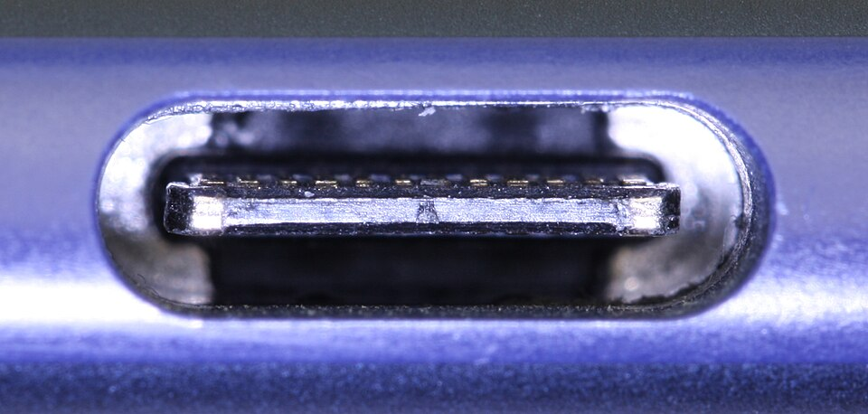
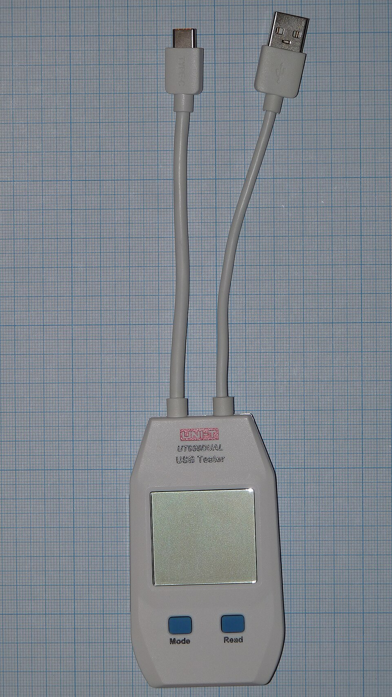
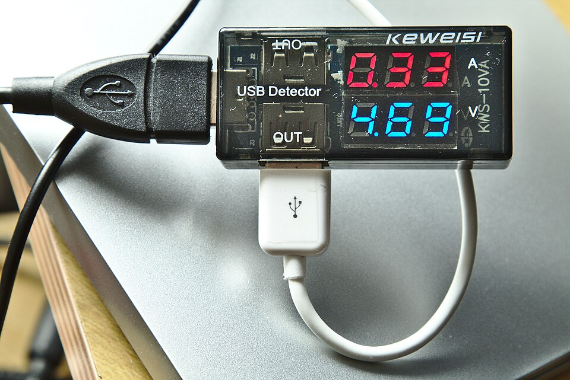
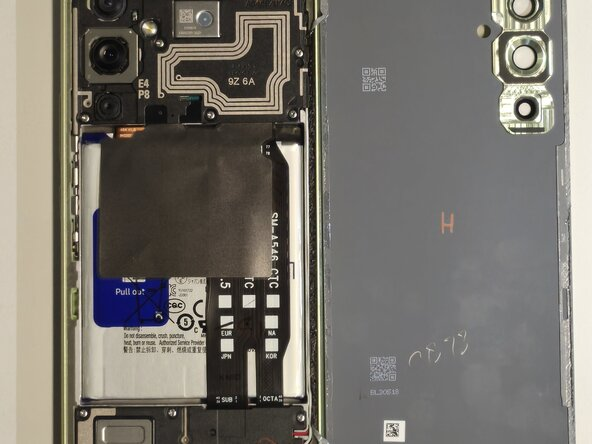
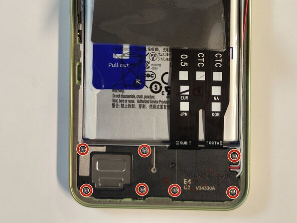
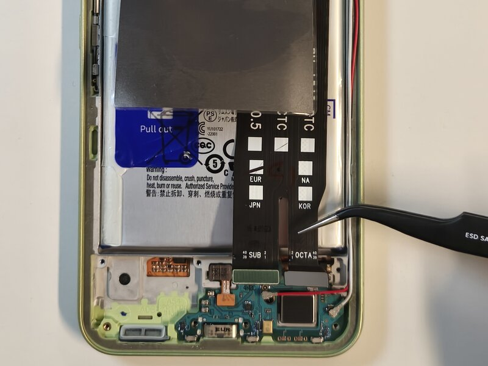
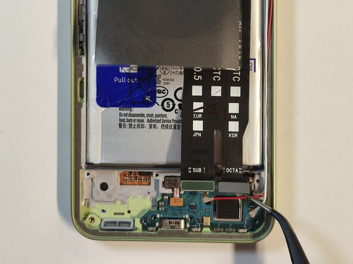
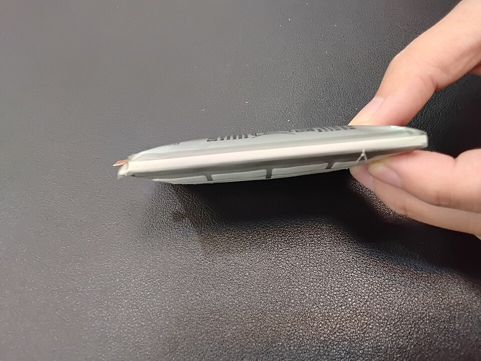

Android charging faults and board-level triage
Compare a phone’s external charging behaviour, locate the suspect path on an unpowered donor, and rehearse component work on a training board.
Follow the charging path before measuring it
Start with five physical parts you can point to. The wall adapter supplies power to the cable. The cable plugs into the receptacle. On some phones that receptacle sits on a small daughterboard connected to the main board by a flat interconnect flex. The main board manages charging the battery. A damaged plug, worn port, torn flex and failed battery can all end up reported as “won’t charge”.
There are three common repairs to distinguish. A phone may use a port on a replaceable flex, a port on a replaceable daughterboard like the Galaxy A54 below, or a port soldered to a larger board that requires board-level rework. The separate headphone module in P34’s Pixel 4a is a different assembly serving audio. Find the exact arrangement in the parts diagram before ordering anything.
Build a known-good charging comparison

Photo by D-Kuru, scaled for the course. Original photo · CC BY-SA 3.0 AT.

Watch on YouTube · USB-C Power Delivery · STMicroelectronics
Follow how the source and device agree on a power profile. Use that distinction when comparing readings from your two cables.
Use your physically sound USB-C phone, a compatible charger and a known-good cable. Start with the normal connection. A USB power meter is optional and goes in line, between the charger and phone. Check that it passes the required USB-C negotiation and is rated for the voltage and current. Install it in the direction marked by its maker. The display reports voltage and current at the USB connection. The phone may be using some of that power while it runs.

Photo by Dmitry G, scaled for the course. Original photo · CC BY-SA 3.0.


Photo by Jacek Rużyczka, scaled for the course. Original photo · CC BY-SA 4.0.

Prove your setup. Note the known-good phone’s charge level and temperature. Once charging settles, record voltage, current and the charge indicator. Compare the charge indicator with and without the meter in the path.
Change one item. Connect the suspect phone using the same adapter and cable. Turn the plug over at the phone end and repeat. Try a second known-good cable if one orientation fails. Compare at similar charge levels where possible.
Test data on its own. On a device you own and can unlock normally, check data with a known-good data cable directly to a computer. A phone may still charge with a failed data path or a charge-only cable. Keep charging and data results separate in the record.
| What you observed | Next test |
|---|---|
| Known-good setup works in both orientations. Suspect phone only charges in one. | Repeat with a second good cable. Inspect the phone receptacle for damage or debris with power disconnected and follow the model’s cleaning instructions. Consider the connector/CC path if the fault persists. |
| Wired charging repeatedly fails, supported wireless charging works. | Document working wireless charging as evidence. Check the port/module and its connection before escalating to board diagnosis. |
| Expected VBUS appears but battery does not gain charge. | Use the official battery status checks, note device activity and temperature, and compare with a repeat below the supported charge limit. |
| Black screen, but the device vibrates or reports to a trusted host. | Follow the display branch of the manual. A partial response narrows the fault and does not by itself verify boot completion. |
Example. The reference phone charges with either orientation. The suspect phone shows a charge icon and about 0.9 A in one orientation, but the icon disappears and the meter shows near zero current in the other. A second cable gives the same pattern, and it also happens directly without the meter. That repeatable difference justifies inspection of the port and its attachment path. The numbers are examples. Charge current depends on the phone, charger, temperature, battery state and activity.
Identify the USB-C board inside a Galaxy A54
The photo example is a Samsung Galaxy A54 5G. Check your model code in Settings or on its label before comparing guides or buying a daughterboard. This design opens from the back and has a covered lower circuit board. Set out a suction handle, plastic picks and spudger, a Phillips #000 screwdriver, a screw map and fresh back-cover adhesive. Samsung SM-A546B repair guide (French PDF) · iFixit A54 board guide (English).
Watch on YouTube · Find the upper battery connection and the separate lower port board. Compare the different shapes of the flex and antenna connectors. DIYgeardo’s Galaxy A54 charging-port board replacement · PBKreviews’ Galaxy A54 teardown.
1. Reach and isolate the battery. After the external tests, shut down, unplug and remove the SIM tray. Follow the Samsung procedure for releasing the rear glass and exposing the upper battery connector. Disconnect the battery flex before unplugging the lower board’s connections. The iFixit photos below document the lower board area. Samsung manual · Battery connector photos on page 32.

Photo by Martyna Bilski for iFixit, scaled for the course, with labels added. iFixit guide, step 5 · CC BY-NC-SA 3.0.

Photo by Martyna Bilski for iFixit, scaled for the course. iFixit guide, step 6 · CC BY-NC-SA 3.0.
2. Expose and map the lower board. The lower cover has seven Phillips screws in this example. Store them with the cover and keep the small daughterboard screw separate. Photograph the seated flexes and each antenna route. The wide connectors release straight up. The narrow antenna cables end in round snap-on plugs. Release them by the plug using the guide’s tool placement, keeping the cable itself slack.

Photo by Martyna Bilski for iFixit, scaled for the course. iFixit guide, step 7 · CC BY-NC-SA 3.0.

Photo by Martyna Bilski for iFixit, scaled for the course, with labels added. iFixit guide, step 8 · CC BY-NC-SA 3.0.
3. Lift the port board and compare the replacement. Once the two broad flexes and the antenna plugs are released, remove the board screw and release the fingerprint and display connectors at the locations shown in the guide. The display connection has adhesive. Check that nothing still holds the board before lifting it. Compare the new board with the removed one, including the port opening and each connector. iFixit · Board screw and remaining connectors.

Photo by Martyna Bilski for iFixit, scaled for the course, with labels added. iFixit guide, step 12 · CC BY-NC-SA 3.0.
4. Reassemble and prove the result. Use the documented flex and antenna routing and fresh back-cover adhesive. Recheck charging in both orientations and USB data first. Check voice recording, speaker output, display and fingerprint function because their connections were worked around or disconnected during the repair. Compare with your intake record.
Do a cold check on a documented donor

Photo by Saimmx, scaled for the course. Original photo · CC0.

Follow the model’s isolation sequence, then trace a documented path from the port or daughterboard through its flex and protection to an accessible point. Record visible connector or pad damage. With the board isolated and unpowered, compare continuity between identified points and compare diode-mode readings with a known-good board of the same revision using the same meter and orientation. Write down which point was confirmed, including the connector or pad name and both probe positions. Practise continuity and diode mode in P03.
For a soldered port, practise on an unpowered, battery-free connector training board with labelled breakout pads. Map ground and shell where the board specifies they are connected, VBUS and the available signal pads. After a supervised practice replacement, verify each routed pin-to-test-point connection and check adjacent independent nets for bridges. Work up from the resistor and castellated exercises in P26. A densely packed phone board may need microscope work, controlled heat and a qualified technician. Refer packed multilayer, data-critical, battery-damaged or undocumented cases.
Write the closing test
Recheck charge in both orientations with the recorded known-good combination. Where relevant, test data, mic, speaker, wireless, and any functions the port board carries. Record a later battery percentage under comparable use. For a referral, write the last confirmed node and why you stopped, so the next tech can begin there.
If the phone accepts a charge in both orientations but runs for less time unplugged, use P36’s battery runtime and shutdown checks.